The Genius Within
The Challenge
How Might We recognize the
inventive spirit of Cambridge in an
inclusive manner?
Client
MIT
Installation
2025
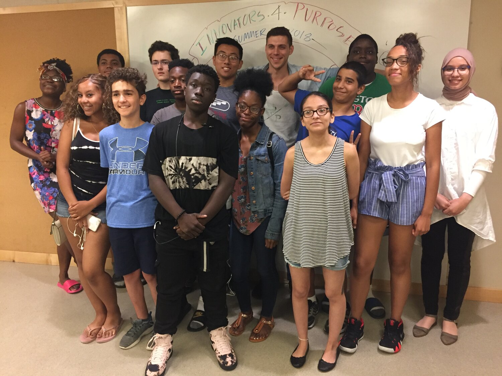
The Original Design Team
Origin Story.
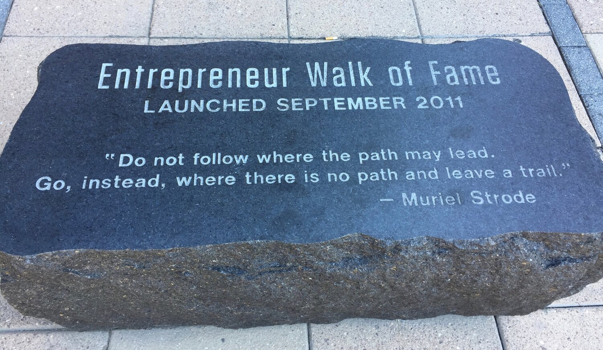
While researching for our now-iconic installation, The Looking Glass, we stumbled onto Kendall Square’s Entrepreneur Walk of Fame—a 2011 tribute honoring the giants of tech and invention.
.jpeg){kind=link}
The names on the first plaques?
Bill Gates. Bill Hewlett. Bob Swanson. David Packard. Mitch Kapor. Steve Jobs. Thomas Edison.
And then—nothing.
Though new honorees were promised each year, no new names were added. The silence became louder than the plaques themselves.
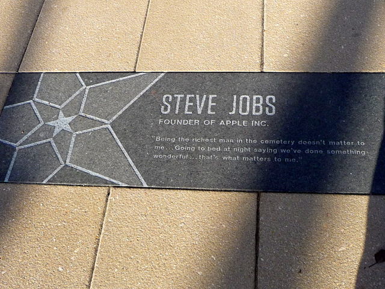
Frozen in Time.
You’d hope that by now, a woman or person of color might have been recognized.
But the absence spoke volumes.
We founded Innovators for Purpose (iFp) to inspire all young people— especially those from unrecognized communities—to see themselves as part of the innovation economy.
And when we saw what was missing, it was obvious what our next project had to be.
Kendall’s Inventive Spirit
Reimagined

In partnership with MIT, we set out to tell a more inclusive story of Kendall’s inventive spirit.
We unearthed powerful moments:
From the world’s first center-aisle train car... To Alexander Graham Bell and Thomas Watson placing the first telephone call…
To the invention of instant photography… And the rise of biotech breakthroughs happening today.
Main Street has always been Kendall’s central artery of innovation.
But a short walk from that boulevard reveals a deeper story.
Like that of Dr. Ronald McNair—a physicist, astronaut, and MIT graduate—who lost his life in the Challenger mission. Dr. McNair crossed Main Street several times a week to teach karate at St. Paul AME Church in The Port, Cambridge’s most economically challenged neighborhood.
Our installation honors Dr. McNair—and a richly diverse group of innovators whose stories reflect the many identities, disciplines, and communities that have shaped Kendall Square into what it is today: the most innovative square mile on the planet.
Research. Ideate.
Collaborate.
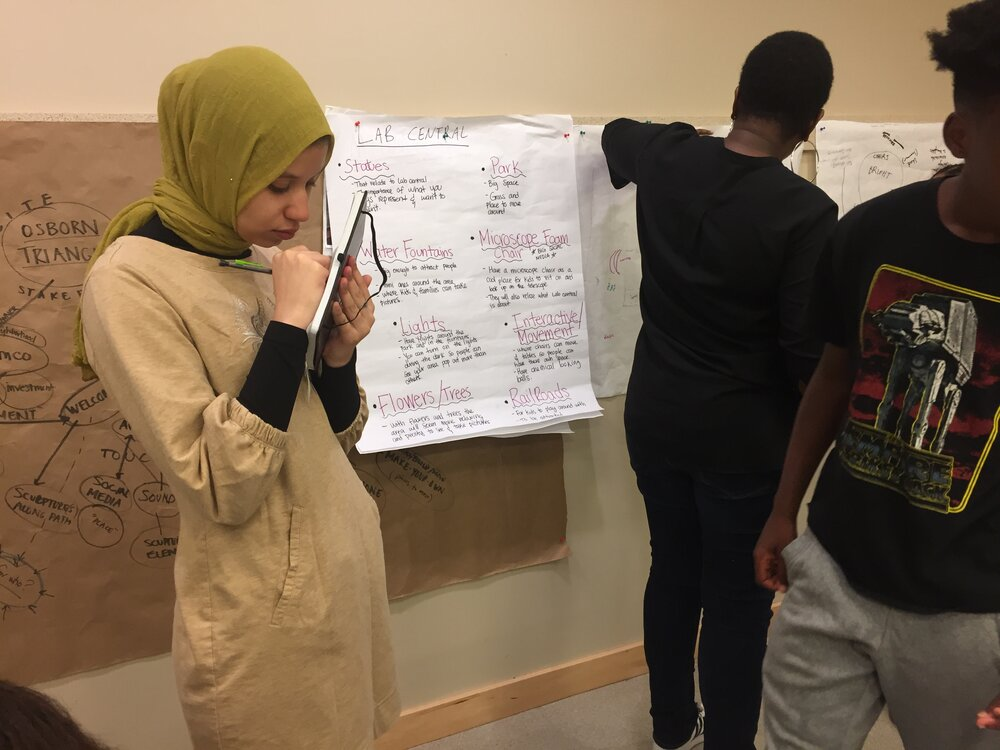
Students work collaboratively with designers, technologists, makers and other professionals to bring new-to-the-world ideas to life. The resulting products / experiences are fresh and cutting-edge with a youth inspired vibe.
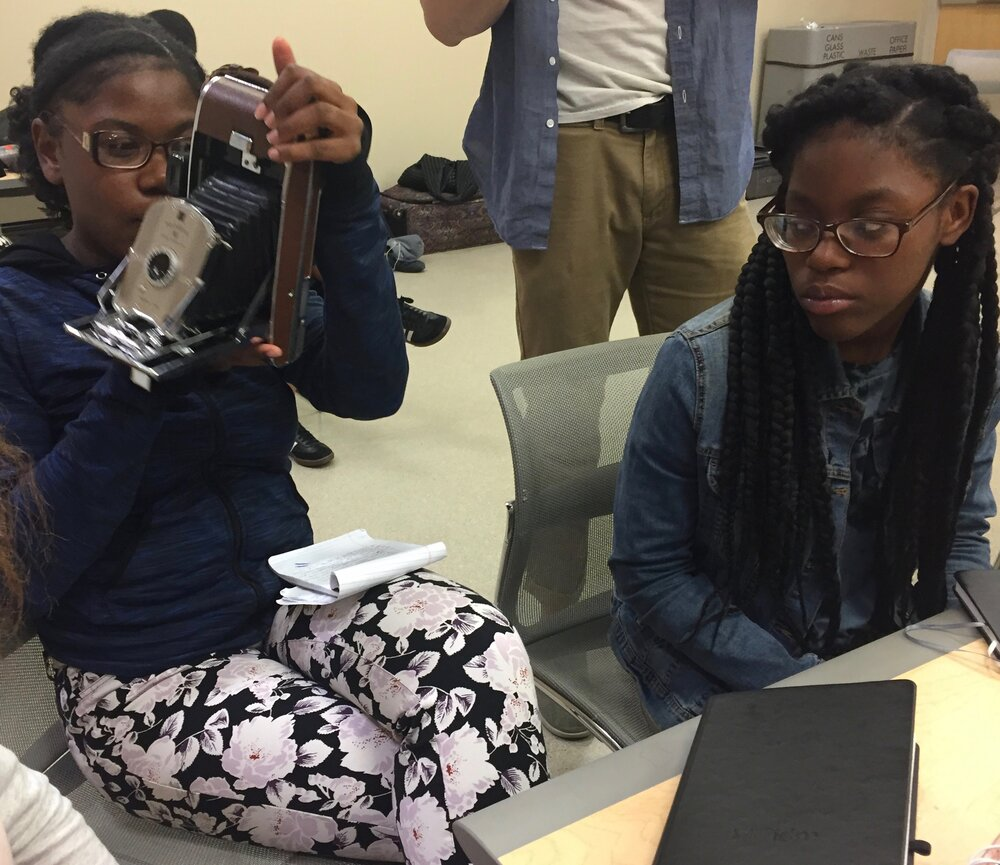
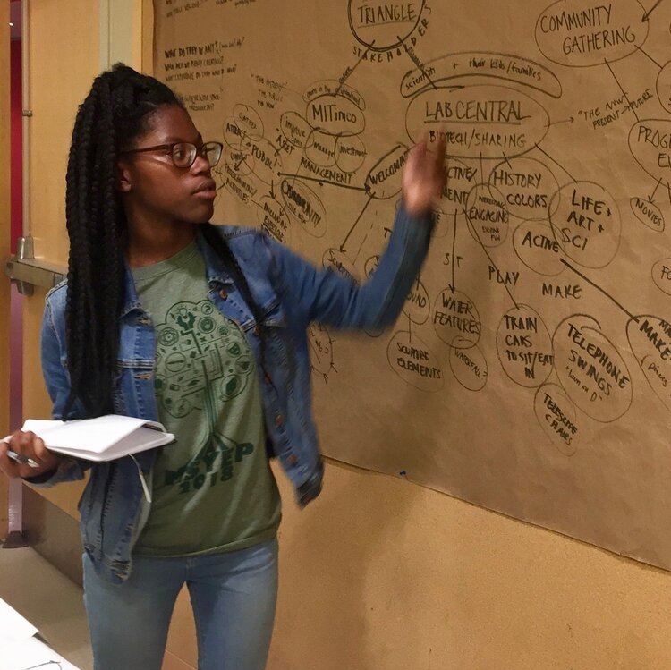
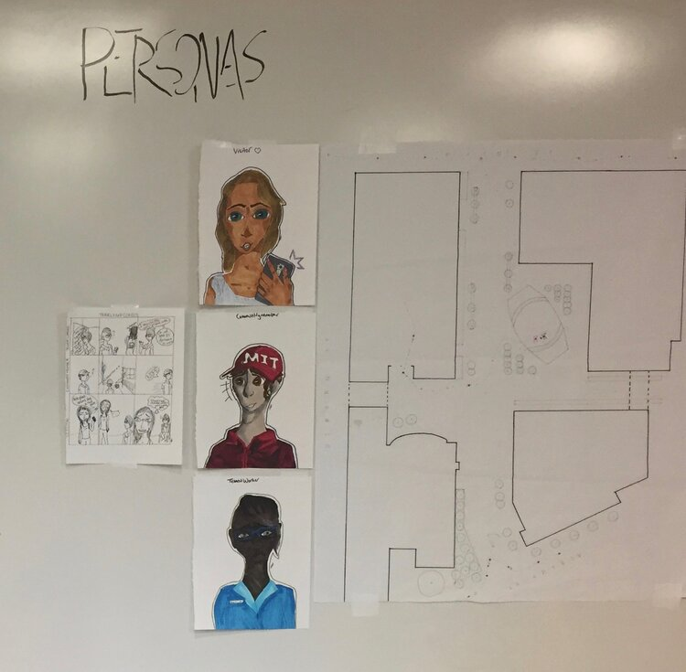
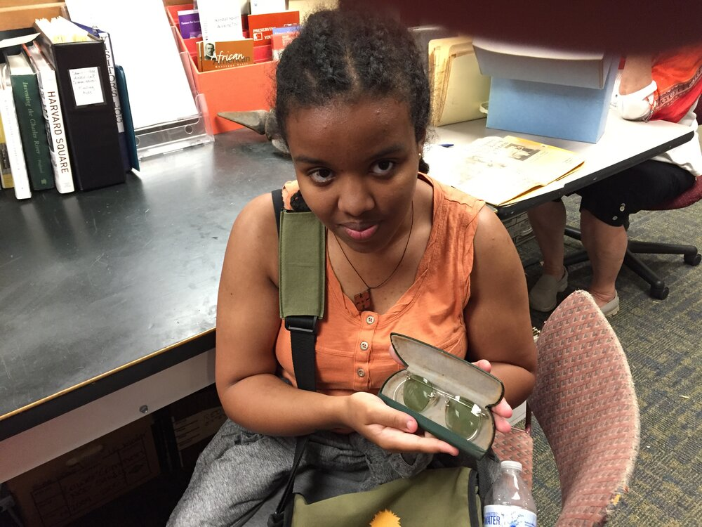

“iFp’s design approach is a great way for MIT to build authentic relationships with the next generation of innovators. We are grateful to the young people at iFp for providing a fresh perspective to our built environment.”
— Amanda Strong, Director Asset Management MIT Investment Management Company
Design with Purpose.
Design Inspiration and Early Development
A change in location sparked a design challenge.
Our original concept no longer worked in the new space, and we needed to rethink everything—form, flow, visibility. Then, almost by accident, we came across a design that just fit
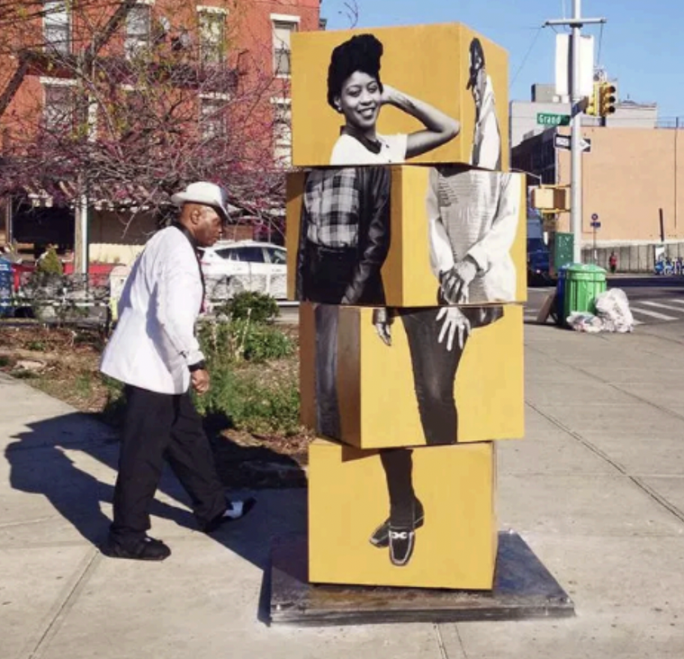
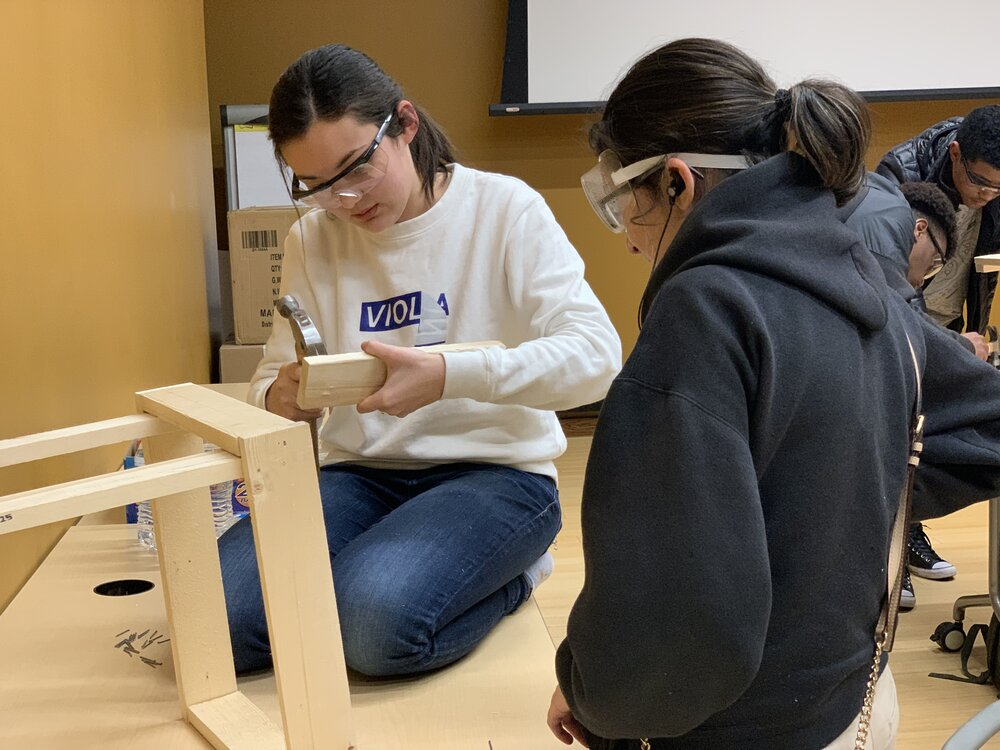
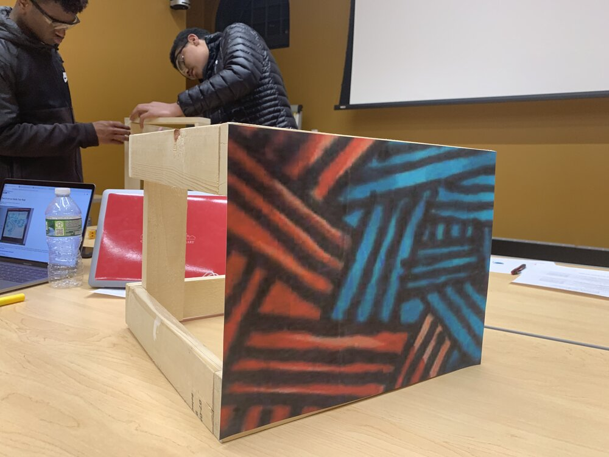
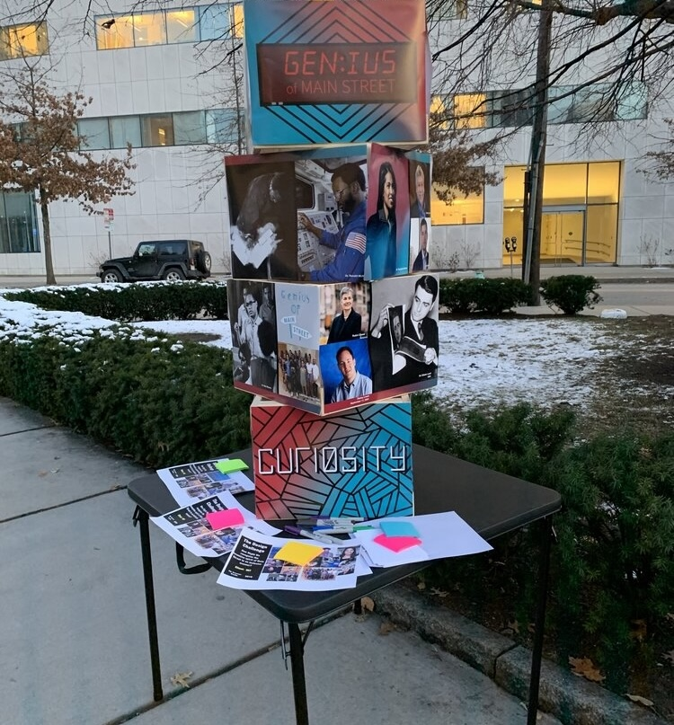
The Mirrors
Innovation isn’t just something you see—it’s something you recognize in yourself.
During one of our early design reviews, a reviewer made a powerful suggestion:
“What if there were mirrors—so that visitors could see themselves in the installation?”
This was a eureka moment.
We realized the piece couldn’t just celebrate past innovators. It had to invite future ones.
So we added mirrors—not as decoration, but as a declaration.
Each one was placed with intention. As you move through the installation, you’re not just taking in stories—you’re asked to see yourself among them. To recognize that the genius we admire in others already exists within you.
Thus the name: Genius Within.
Because true innovation isn’t reserved for the names etched in plaques. It begins when someone dares to believe: I belong here too.
Color
Our color palette was inspired by the booming tech and biotech industry, paired with warmer futuristic tones.
Layout
We wanted a layout that was accessible and made sense in the design. We took into account the mirror placement and what spot would be easiest for people of all heights to reach.
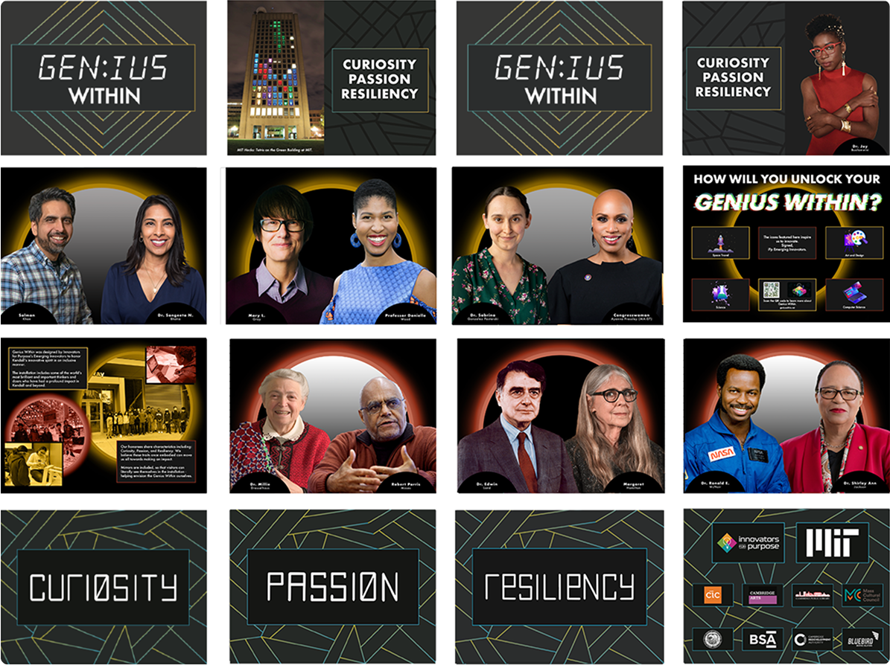
Curiosity. Passion. Resilience.
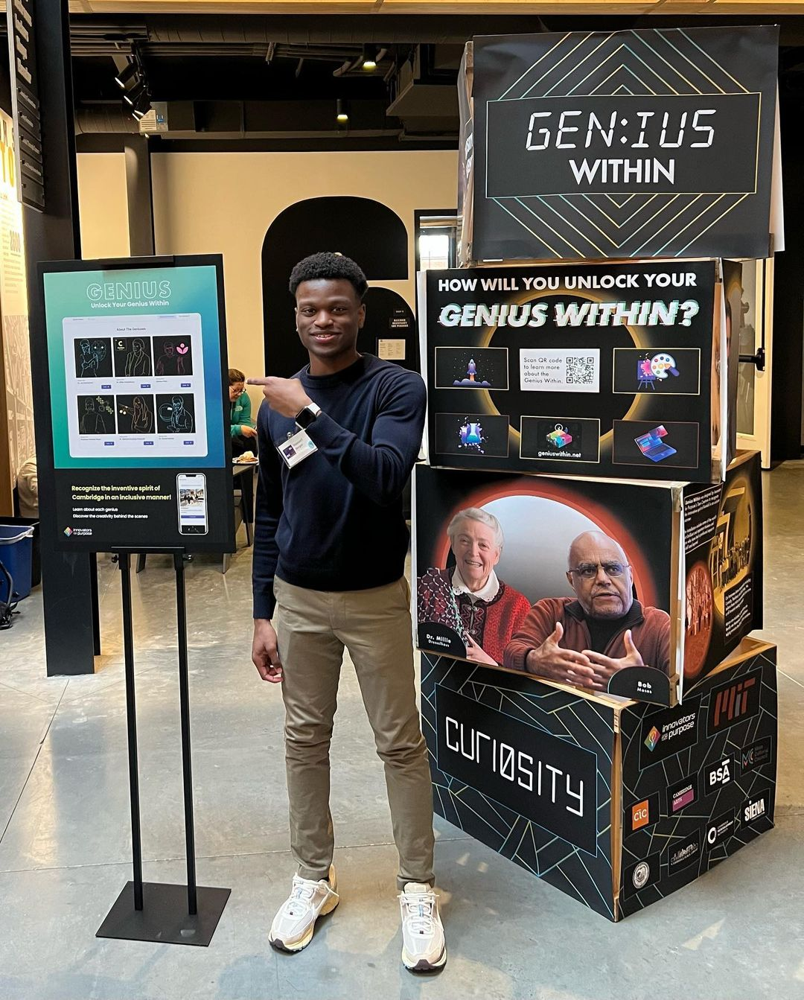


These aren’t just qualities we admire—they’re the heartbeat of Genius Within.
Each story etched into this installation began with a question no one else was asking, a bold belief in what could be, and the strength to keep going —especially when the path wasn’t clear.
And that’s the message we hope every viewer takes with them: That the same curiosity, the same passion, and the same resilience that built Kendall Square’s legacy of innovation lives within you, too.
Because genius doesn’t only exist in history—it’s alive in the present.
It’s waiting to be recognized.
And it’s ready to be activated.
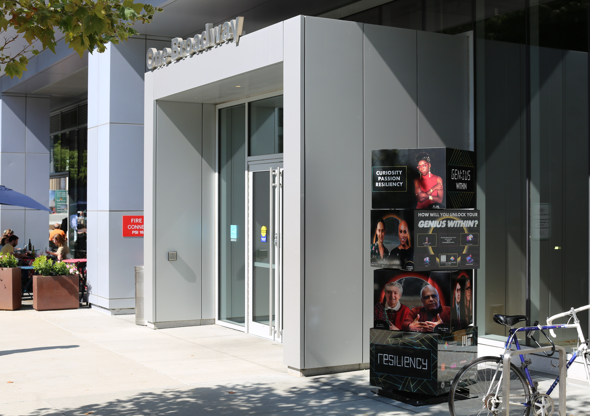